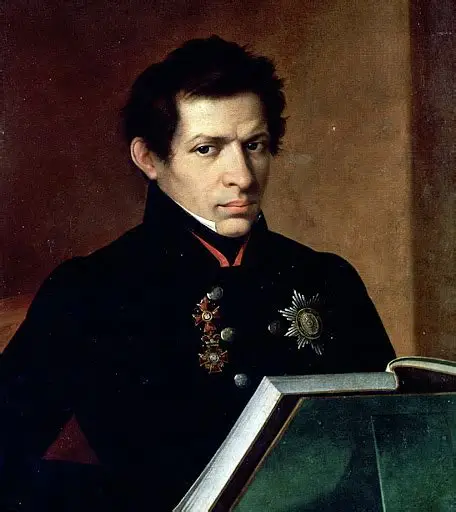

Welcome to the Mathematical World!
Nikolai Lobachevsky
Pioneer of Non-Euclidean Geometry
Nikolai Ivanovich Lobachevsky (1792–1856) is revered as one of the founders of non-Euclidean geometry. Working in Kazan, he boldly challenged Euclid’s parallel postulate and constructed a consistent alternative geometry, now called Lobachevskian geometry. Though criticized in his lifetime, his work reshaped mathematics, paving the way for modern geometry, relativity, and topology.
Geometric Revolution
- Parallel Postulate — Lobachevsky proposed that through a point outside a line, infinitely many parallels can be drawn, contradicting Euclid’s axiom.
- Hyperbolic Geometry — He developed trigonometric formulas and area measurements for hyperbolic space, proving its internal consistency. For instance, in his geometry, the angle sum of a triangle is always less than \(180^\circ\): \[ \alpha + \beta + \gamma < \pi \]
- Mathematical Methods — He extended trigonometry to imaginary numbers and applied hyperbolic functions.
Mathematical Vision
Lobachevsky demonstrated that axiomatic systems need not reflect physical space but can exist as independent logical worlds. His discovery foreshadowed Einstein’s relativity, where the geometry of space depends on curvature. Lobachevsky’s genius lay in showing that the structure of mathematics is not dictated by intuition but by consistency and proof.
Legacy
Initially dismissed, Lobachevsky’s work gained recognition in the late 19th century through Gauss, Bolyai, and later Riemann. Today, he is honored worldwide as a founder of modern geometry. His vision elevated Russia’s role in international mathematics.
Facts
- Born in Nizhny Novgorod, Russia.
- Professor and rector at Kazan University.
- Created the first systematic non-Euclidean geometry.
- Connected geometry with complex analysis and trigonometry.
- Called “the Copernicus of Geometry.”